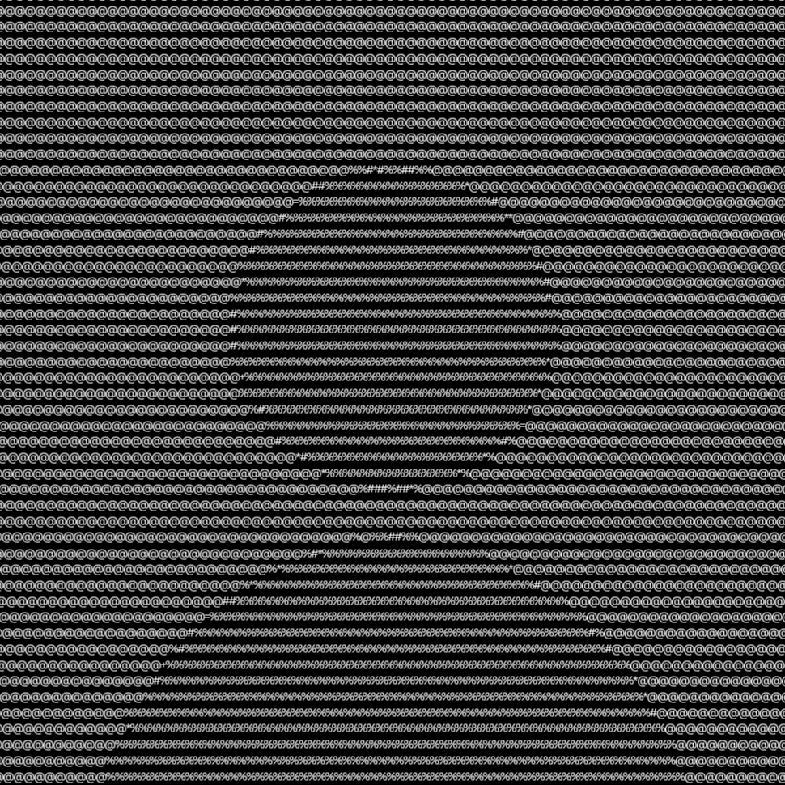

Programming Projects
Portfolio
This
site serves as a structured archive of my programming work. It
showcases my foundational skills in web
layout design, file organization, and clean code implementation.
Tackling the basics tags of html using
strong and em to add
variety in a song lyric or our choice.

The use of style tag to create a much
more lively and abstract
way of designing a website.
Tackling the three different type of
lists to create a simple
basic student information profile website.
The inclusion of images in the student
profile to have a media
and see the person's face/image.
A group project consisting of a
promotional video that needs to
be included on a promotional website that you make.